Ready to use HQ Data Profiler to analyze some data? Let's open the tool.
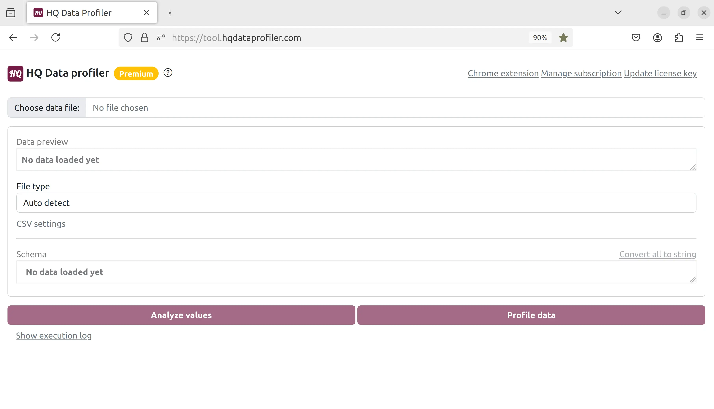 Click "Choose data file" and select the file. We will choose this JSON file, but HQ Data Profiler supports many other file types such as CSV, Excel, JSON, and XML:
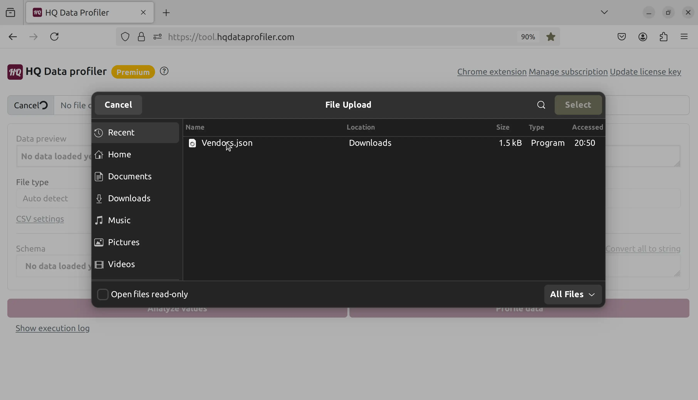 Now, we can see a preview of the file. HQ Data Profiler automatically handles arrays, nested fields, and other complex data formats:
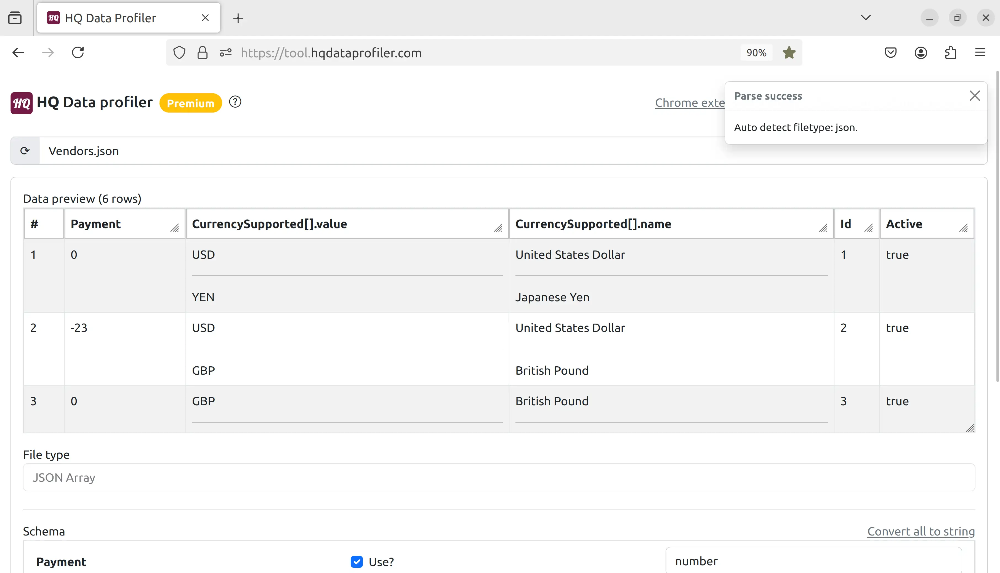 Scroll down to the bottom of the screen, and we can see the schema which was auto-detected and can be modified:
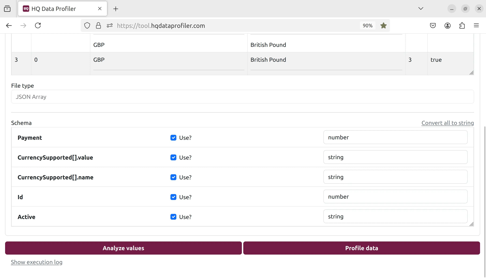 Let's click the "profile" button to get metrics from our data:
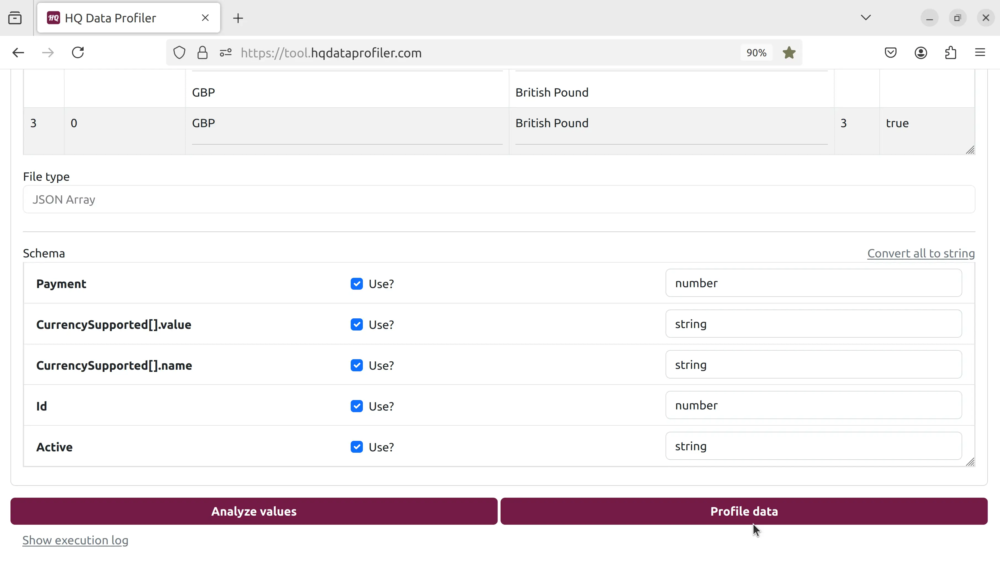 Many metrics for each field are calculated and displayed, such as the number of unique, duplicate, and distinct values and the min, median, max, and top 10 values:
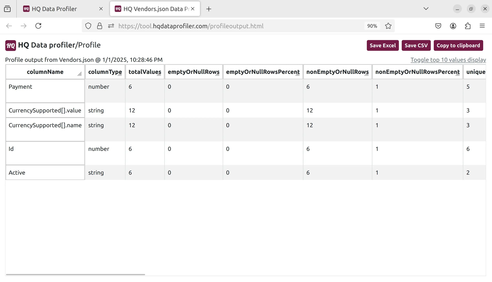 Let's go back and click the "analyze" button:
 Each unique value for each field is displayed, sorted with machine learning to display values most likely to be outliers first.
Each unique value for each field is displayed, sorted with machine learning to display values most likely to be outliers first.
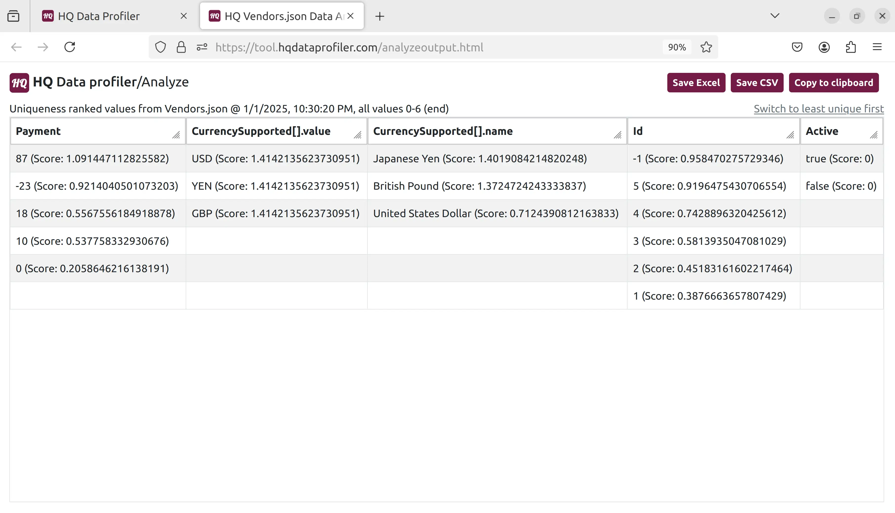 HQ Data Profiler does all processing securely and privately on your own device. Get started today.
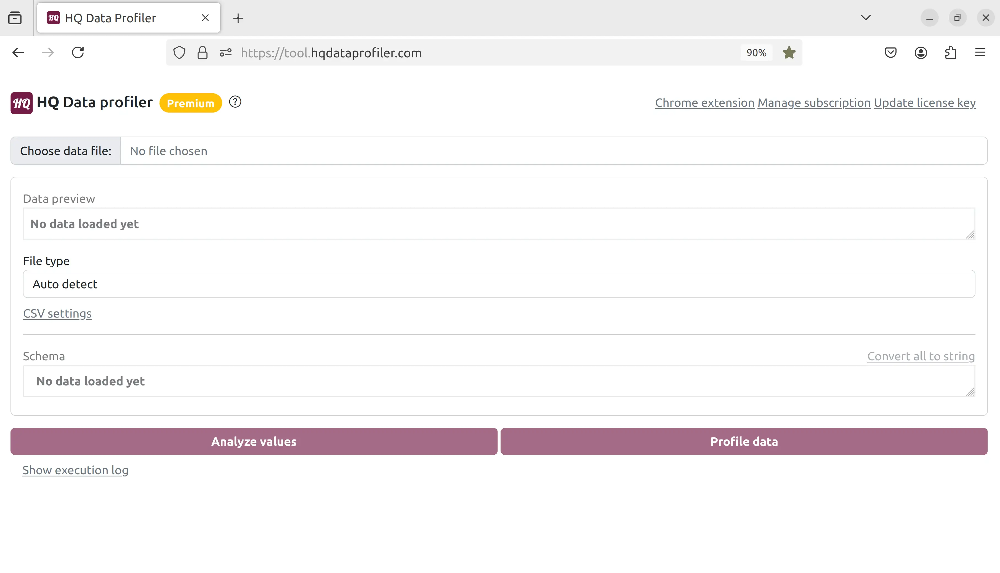 Click "Choose data file" and select the file. We will choose this JSON file, but HQ Data Profiler supports many other file types such as CSV, Excel, JSON, and XML:
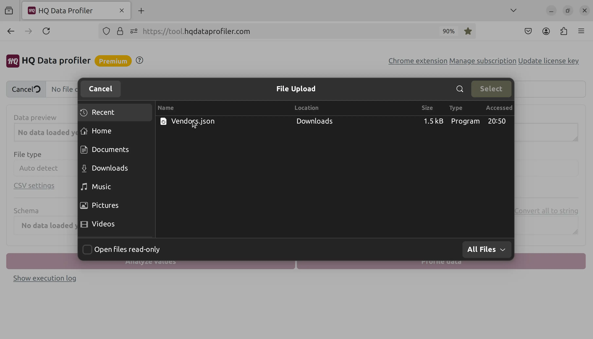 Now, we can see a preview of the file. HQ Data Profiler automatically handles arrays, nested fields, and other complex data formats:
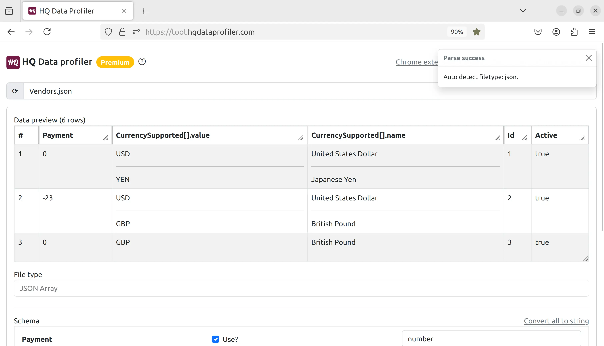 Scroll down to the bottom of the screen, and we can see the schema which was auto-detected and can be modified:
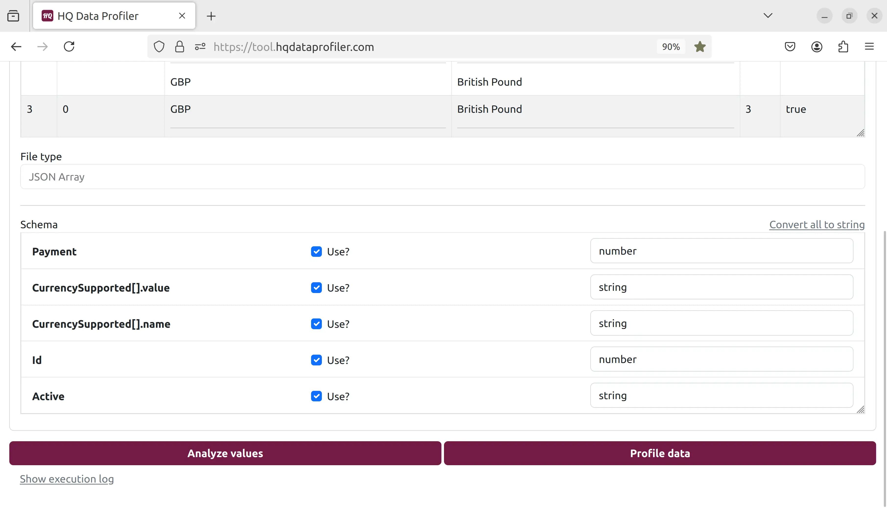 Let's click the "profile" button to get metrics from our data:
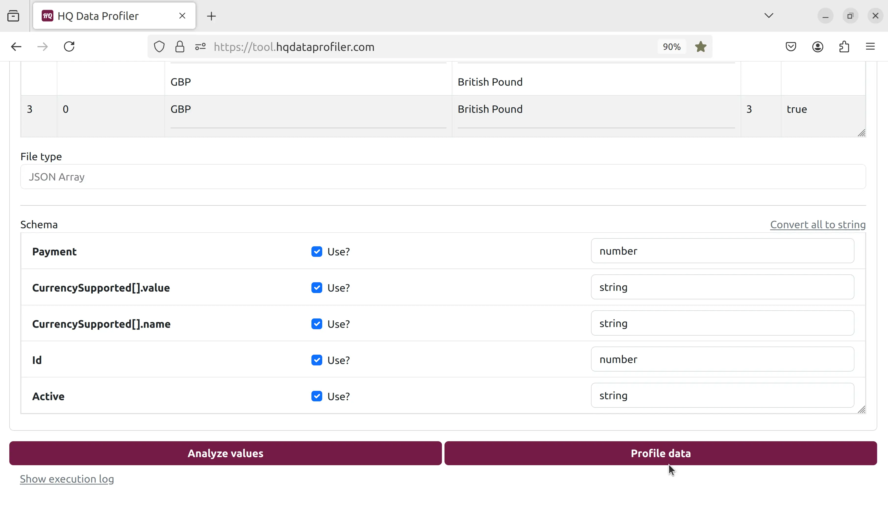 Many metrics for each field are calculated and displayed, such as the number of unique, duplicate, and distinct values and the min, median, max, and top 10 values:
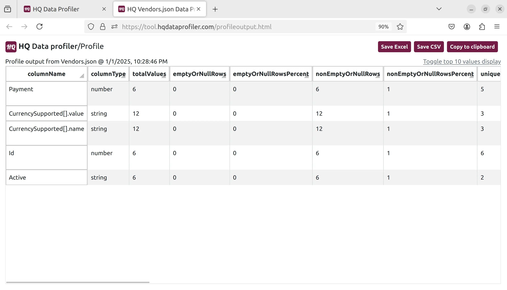 Let's go back and click the "analyze" button:
Each unique value for each field is displayed, sorted with machine learning to display values most likely to be outliers first.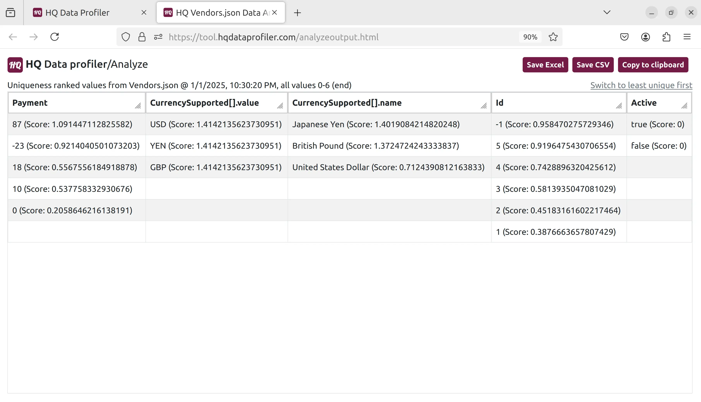 HQ Data Profiler does all processing securely and privately on your own device. Get started today.